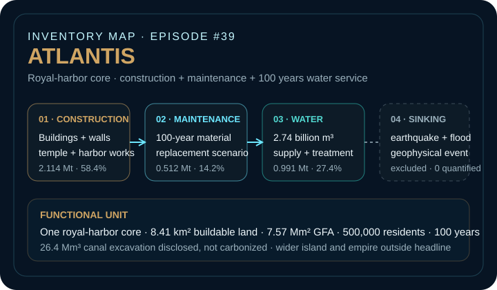
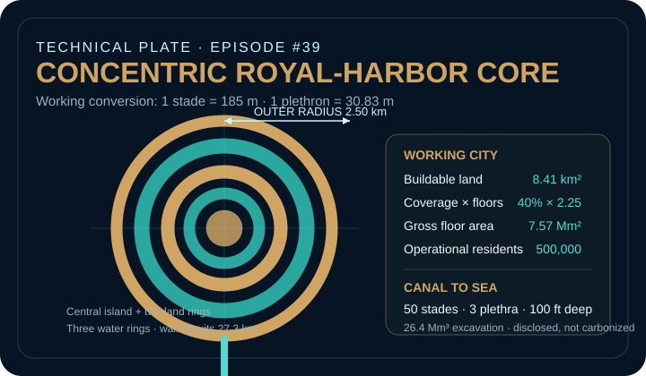
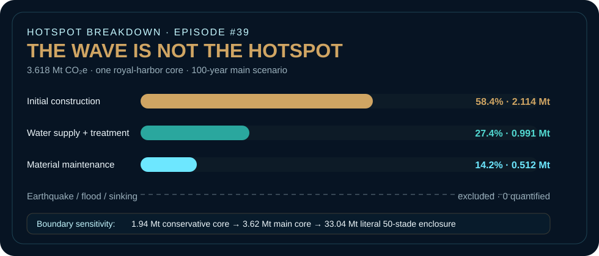

EPISODE #39 · MYTHS & LEGENDS
Atlantis
What if the hardest part of the footprint is deciding where the city ends?
THE SUBJECT
Geometry is textual. Carbon is reconstructed.
Plato's Critias describes a royal-harbor core built as concentric infrastructure: a central island, two land rings and three water rings, connected to the sea by a long canal and wrapped by monumental walls, docks, bridges, aqueducts, baths and dense habitation.
The model does not treat Atlantis as the whole island, the empire or the geological catastrophe. It treats the concentric royal core as one urban product system. Plato constrains the geometry; the reconstruction supplies density, material quantities, service life and modern emission-factor proxies. Population is therefore a capacity assumption, not a historical claim.
Concentric core
2.50 km outer radius, three water rings and 8.41 km² of buildable land in the island plus two land rings.
Working city
40% footprint coverage × 2.25 average floors gives 7.57 Mm² GFA and an implied capacity of 498,169 residents, rounded to 500,000.
Main hotspot
Initial construction contributes 2.114 Mt CO₂e, or 58.4% of the 100-year result. Water supply and treatment add another 27.4%.
Boundary sensitivity
Three spatial readings move the result from 1.94 Mt to 3.62 Mt to 33.04 Mt CO₂e. The largest uncertainty is where Atlantis ends.
VISUAL MODEL
A city built from rings, walls and service flows
The reconstruction separates physical geometry from the assumptions needed to turn Plato's description into an auditable 100-year urban product system.


LIFE CYCLE INVENTORY
Atlantis emits before it disappears.
Values below are those reported in the approved episode. Where the PDF reports a contribution but not the underlying material mass, the website does not invent one; the complete formulas are stated in the episode as belonging to the workbook.
| Stage | Component / activity | Activity data | Climate change | Modelling basis |
|---|---|---|---|---|
| Construction | Buildings — worked stone | 7.57 Mm² GFA allocation · mass not stated in PDF | 851.8 kt CO₂e · 40.3% of construction | DEFRA 2026 material-use proxy; dominant building contribution. |
| Construction | Three principal stone wall circuits | 27.3 km walls · 12 m high · 8 m thick · 6.29 Mt stone | 472.0 kt CO₂e | Worked masonry proxy for the three circuits described around the concentric city. |
| Construction | Buildings — metals | Mass not stated in PDF | 289.4 kt CO₂e · 13.7% of construction | Generic DEFRA Metals factor; the literary text names brass, tin and orichalcum. |
| Construction | Buildings — bricks | Mass not stated in PDF | 274.6 kt CO₂e · 13.0% of construction | DEFRA 2026 material-use proxy. |
| Construction | Buildings — timber | Mass not stated in PDF | 163.3 kt CO₂e · 7.7% of construction | DEFRA 2026 Wood material-use proxy. |
| Construction | Temple, bridges, quays and aqueducts | Poseidon temple 185 × 92.5 m; assumed 30 m high; 5,000 t timber + 1,500 t metals | 62.8 kt CO₂e combined group | Engineering reconstruction of the infrastructure explicitly described in the text. |
| Construction | Wall metal skin | 2,786 t · 1 mm brass/tin/orichalcum proxy | Included in 482.6 kt CO₂e wall-system carbon | Generic Metals factor. Orichalcum has no dedicated emission factor. |
| Maintenance | Material replacement over service life | 100-year replacement scenario | 0.512 Mt CO₂e · 14.2% | Recurring material maintenance after initial construction. |
| Operation | Water supply + treatment | 500,000 residents · 150 L/person/day · 2.74 billion m³ over 100 years | 0.991 Mt CO₂e · 27.4% | DEFRA 2026: 0.1913 kg CO₂e/m³ supply + 0.17088 kg CO₂e/m³ treatment. |
| Disclosed exclusion | Sea canal excavation | 50 stades long · 3 plethra wide · 100 ft deep · 26.4 Mm³ | Not carbonized | Physical excavation disclosed; ancient excavation energy and human labour excluded. |
| Excluded event | Earthquake, flood and sinking | Geophysical catastrophe | 0 quantified · excluded | No defensible activity data or emission factor in the defined product system. |
Included
Construction materials, three principal wall circuits, the temple and harbor infrastructure, material maintenance and 100 years of water supply and treatment for the modeled royal core.
Outside headline
The wider island and empire, the plain and its ditch, food, household energy, fleet, warfare, mining, rescue, rebuilding and every consequence of submergence.
Representativeness
Water is intentionally a low-representativeness modern proxy: Plato gives springs, baths, cisterns and aqueducts, not a UK mains network.
HOTSPOT
The wave is not the hotspot
The catastrophe dominates the story but not the quantified inventory. Most of the modeled climate burden exists before the city sinks.

Main result
3.618 Mt CO₂e
One royal-harbor core over 100 years.
Initial construction
2.114 Mt CO₂e
58.4% of lifecycle GWP.
Water service
0.991 Mt CO₂e
27.4% over 2.74 billion m³ supplied and treated.
Intensity
72.4 kg CO₂e/resident-year
7.24 t per resident or 478 kg CO₂e/m² GFA over the modeled century.
Spatial-boundary sensitivity
Conservative core → 1.94 Mt CO₂e
Main royal core → 3.62 Mt
Literal 50-stade enclosure → 33.04 Mt CO₂e
The full-enclosure screening case applies a 10% suburban footprint outside the ring system and reaches 4.52 million residents.
Geometry sensitivity
The working conversion is 1 stade = 185 m and 1 plethron = 30.83 m. Ancient stadia varied, so a shorter stade is tested in the underlying sensitivity model.
The geometry is textual; the numerical city is reconstructed.
Proxy lesson
DEFRA covers 100% of the quantified main GWP, but that does not make every proxy historically representative. Water is deliberately visible as a modern service analogue rather than silently treated as ancient infrastructure.
Boundary lesson
The largest uncertainty is not the carbon factor. It is the sentence that decides where the city stops. Scenario arithmetic is evidence of model transparency, not evidence that Atlantis existed.
THE VERDICT
Atlantis did not sink because of carbon.
But its carbon story begins before it sinks.
The impossible part is not the total.
It is pretending the boundary is obvious.